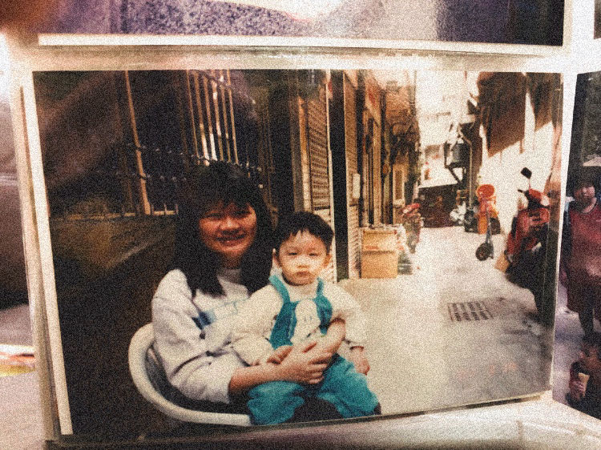
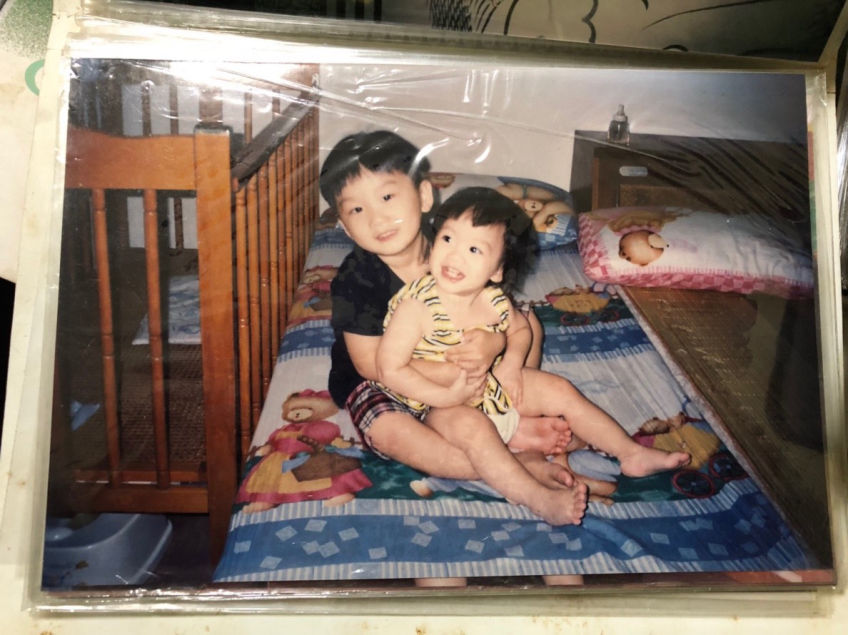

煮故事 we're living here
O8D ACT
website templates

洪銀穗女士與大兒子合照於住家前門口
草芥的時代奮鬥
洪銀穗的寫實城鄉
二十年多年前，蝸牛巷裡沒有太多的買賣，住在這社區裡的人，多是白手起家的創業者，每一戶人家都有一篇與時代拼搏的奮鬥史，不高調，反而是擁抱沉默，因它知道這裡是要讓大夥獲得一晚自在的安穩地。
住在現稱「老人巷」的洪銀穗，她的故事相對平民，跟不少從鄉野出身，在都會搏鬥的人一樣，只是太過素人，也就少聽到這樣的事，但卻紮實地反映民國80年代前後多數人的樣子，那些在時空轉換中，所留下的時光記憶。
台南鄉野 不歹命但認份
出身在台南玉井的洪銀穗，家中務農，印象還很深刻的可以說出種過西瓜、柳丁、芭樂、芒果、桃子、紅龍果、玉米、龍眼、荔枝等作物，乃因她很清楚父母的辛勞、姊妹的選擇在這塊田地中，她才得以在民國60、70年，有了向上求學的機會。
在那經歷過加工出口經濟，南部仍是留有勞力輸出為主的產業為重，只要唸到不錯的技職學校，工作不成問題，所以洪銀穗，從小便以到都市念書為目標，也確實讓她第一梯次（第22名）就考取台南高商。
這高中三年，是獨立生活的開始，「對鄉下的小孩子是生活的挑戰，必須事事自己摸索。」她補充說著，「鄉下父母務農，甚少農閒，或有娛樂的概念，因此也就不會帶小孩子假日出去玩。跟現代小孩，年紀小就有四處遊歷的經驗，有非常大的落差」所以這時期之前，洪銀穗對於都市是陌生的，不過，就是這段時間的養成，讓她更懂著快速的適應生疏環境。
然而這樣的自我管理，其來有自，在小學時，雖然洪銀穗相對其他姊妹功課較佳，父母也就不太會要求她下農耕作。說也奇怪，她對人總有一顆敏銳的貼心，知道這樣會造成兄弟姊妹間的歧異，故她轉而在家務內勤，主動的買菜、煮菜、洗衣服、洗碗、洗被子等。她也這麼謙虛的說著：「鄉下人都是歹命但也認份，不是只有我啦！」
高雄都會 沒有個性就是有個性
高中畢業，就往高雄發展，開始半工半讀的生活，白天念專科，晚上當補習班導師，每週四天在瑞豐夜市跑攤。選擇這樣充實的生活，並不是因為缺錢，而是她想趁著青春挑戰自我的潛力極限，也想要在40歲左右能夠就享有退休的日子，並非環境所迫，做起來相對有幹勁。
補習班班導是在管理學生，她說這些學生多是重考生，需要很長時間的陪伴，盡可能用同伴的姊妹弟關係去跟他們來往，讓他們更專注在課業上。爾後轉任企劃，就是要去背負業績的壓力，去驅使自己前進。
在社會裡的闖蕩，比的是所見所憑，「想要看形形色色的人，做生意最快。」從在高雄後火車站批貨（台南人亦在此批貨），在夜市販售日韓女裝，這些都讓洪銀穗能夠在往後生意場上，擁有絕佳的銷售、談判的技巧。
不過，這樣的忙近忙出，每天工作12-14小時，三餐也不正，她在年輕時就曾身體出現狀況，也錯過很多風景，但這時就能看到鄉下人那種悲觀到底的樂觀，轉念甚快，她說：「我的玩就是在工作裡進行。」由於是高雄的補習班，屬於都會的大牌，因此跑到其他縣市，協助各地學校做模擬考試，就是在這樣的出差機會下，把握喘息空間，到異地走走。
無論是在補習班的日子、還是跑攤創業的生活，面對來來往往的人，對於她的幫助，是內化的，洪銀穗說：「很有個性要磨到沒有個性。厲害的人是幫人家完成心願，我們快樂就好。不過沒個性是指不要始終堅持自己想法是對的。」
蝸牛巷 就是她的生涯映照
在高雄打拼近十年，後來也跟著在高雄認識的先生，回到台南定居，離老家也近了，每年六月底到八月中，也會回到玉井協助農忙，這是存著一顆感念的心，因有姐姐在家幫忙，才能讓她安心在求學、創業路。
這種孝親、善念其實種的很早，主要是她曾經歷過，在小學一、二年級時，有位她喜歡的代課老師，「大概來兩個月，就發現到癌症，不久就過世了。」小學三年級時，則遇到一位老老師，總是會跟她們提聖賢堂、二十四孝的故事，談的是孝順，且會告訴她們該怎麼做，就是從生活中教育學生該如何知恩圖報。
延續到她現今的日常，輔佐先生的成衣銷售的事業、養兒育女，也擔任志工，更經常參加工作坊，「人都需要精神食糧！」洪銀穗表示，生活在蝸牛巷二十多年，雖然還是有人努力為著新台幣奮鬥著，但已不見她二十歲時那種要與時代拼鬥的樣子，反而更多追求文化素養的精力。
現居的老人巷住家，是當年夫妻為了事業所打造的辦公室，今日已改為住家，門面更多了這兩年參加工作坊的作品，綴以花草，可見從年輕到中壯年的心情轉換。也分享社區裡的變化，洪銀穗表示；「這一條以前的房子是日本時代的『販厝』，現在在巷口那幾間都還是堅固的很。」更指出，社區多了年輕人開店，也讓沉寂的蝸牛巷，有了活力，不像以前她剛來的時候，大家總是為了生意，這裡形成吃飯睡覺的地方，有些落寞黑暗。如今這樣的社區轉變，就也像極了洪銀穗的生命流轉，仍有許多未知的待續正等著社區及她呢！

圖為洪銀穗大兒子與小女兒的合照，拍攝於現今蝸牛巷裡尚未改建時的住家